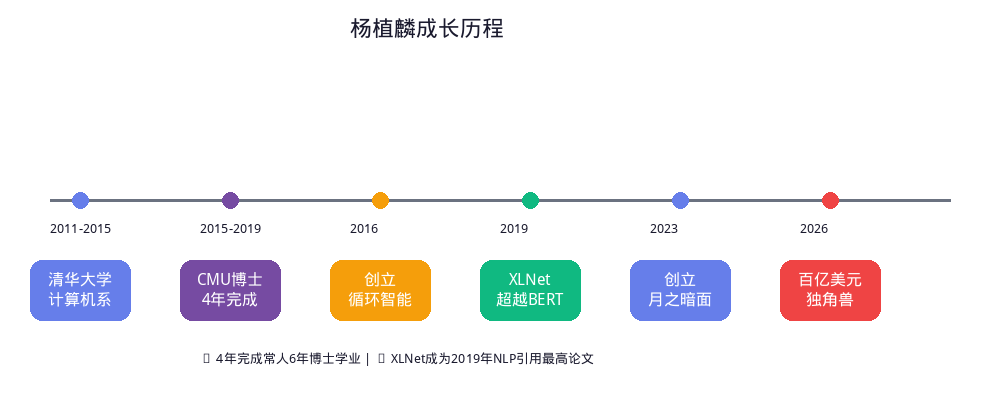
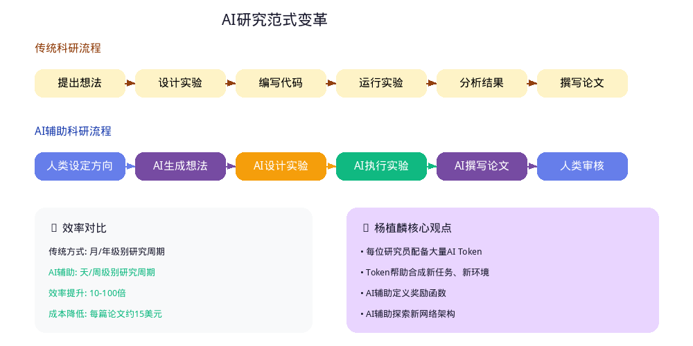
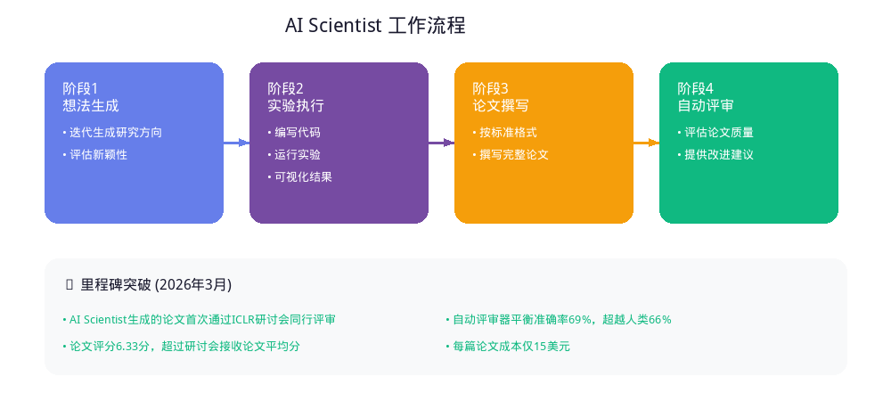
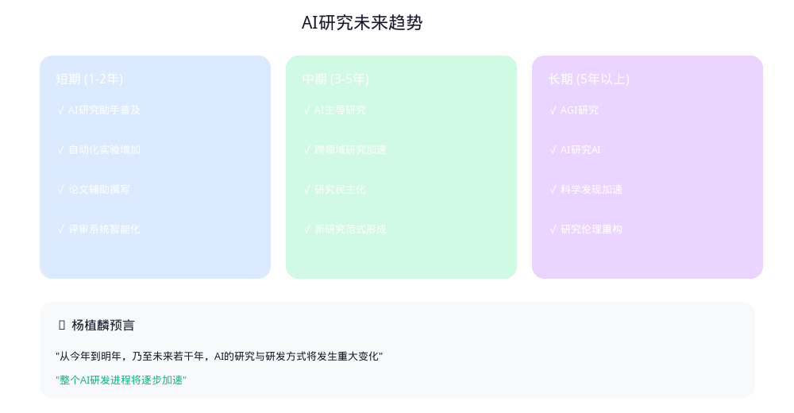
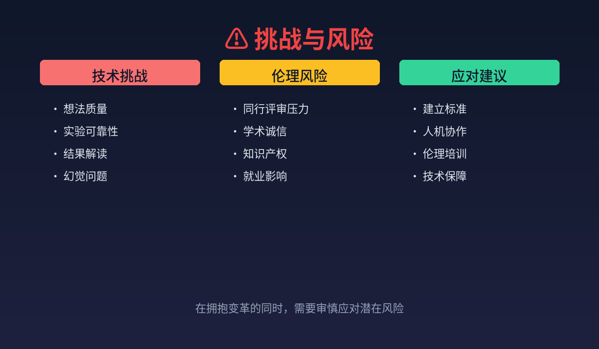

从今年到明年，乃至未来若干年，AI的研究与研发方式将发生重大变化，越来越多的研究将由AI主导完成。每位研究员将配备大量AI Token，这些Token能够帮助合成新任务、新环境，定义适合的奖励函数，甚至辅助探索新的网络架构。
📌 报告摘要
2026年3月25日，在中关村论坛年会上，月之暗面（Moonshot AI）创始人杨植麟发表了关于AI研究变革的重要观点。这位清华系创业者、Transformer-XL和XLNet论文的第一作者，以百亿美元独角兽创始人的身份，预言了AI研究范式的根本性转变。
本报告深度解析杨植麟的观点背景、技术内涵、行业影响，并结合AI Scientist等前沿进展，探讨AI自动化科研的未来图景。
👤 人物背景
学术履历
| 阶段 | 时间 | 内容 |
|---|---|---|
| 本科 | 2011-2015 | 清华大学计算机系 |
| 博士 | 2015-2019 | 卡内基梅隆大学（4年完成，常人需6年） |
| 导师 | - | Ruslan Salakhutdinov（苹果AI负责人）、William Cohen（Google AI首席科学家） |
| 研究 | 2016-2019 | Google Brain 大模型研究 |
核心学术贡献
杨植麟以第一作者身份发表了两篇对NLP领域影响深远的论文：
| 论文 | 发表时间 | 影响 |
|---|---|---|
| Transformer-XL | 2019 | 解决Transformer固定长度上下文限制，实现超长序列建模 |
| XLNet | 2019 | 在20项任务上超越Google BERT，成为2019年全球NLP论文引用最高 |
XLNet 被《麻省理工科技评论》等多家媒体评为2019年全球最重要的论文Top 10。
创业历程
| 时间 | 事件 |
|---|---|
| 2016年 | 联合创立循环智能（Recurrent AI） |
| 2021年 | 入选福布斯亚洲30 Under 30 |
| 2023年4月 | 在北京海淀区知春路27号创立月之暗面（Moonshot AI） |
| 2023年6月 | 完成超2亿美元天使轮融资 |
| 2024年2月 | 完成超10亿美元A轮融资，阿里投资8亿美元购入36%股权 |
| 2024年5月 | 估值达30亿美元（约217亿元人民币） |
| 2026年 | 估值突破百亿美元，成长速度超越拼多多与字节跳动 |

💡 核心观点解析
2026中关村论坛发言要点
杨植麟在2026中关村论坛年会上提出：
"从今年到明年，乃至未来若干年，AI的研究与研发方式将发生重大变化，越来越多的研究将由AI主导完成。"
关键论断
| 论断 | 内涵 |
|---|---|
| 每位研究员配备大量AI Token | Token成为研究资源，类似计算资源 |
| Token帮助合成新任务、新环境 | AI自动生成研究场景和实验设计 |
| 定义适合的奖励函数 | AI参与研究目标设定 |
| 辅助探索新的网络架构 | AI参与模型架构创新 |
技术内涵解读
1. Token作为研究资源
传统科研资源：
- 计算资源（GPU/TPU）
- 数据资源
- 人力资源
新增资源：
- AI Token（词元）
- 每位研究员配备大量Token
- Token用于调用AI能力
2. AI主导的研究流程
传统流程：
人类 → 提出想法 → 设计实验 → 编写代码 → 运行实验 → 分析结果 → 撰写论文
AI主导流程：
人类 → 设定方向 → AI生成想法 → AI设计实验 → AI编写代码 → AI运行实验 → AI分析结果 → AI撰写论文 → 人类审核3. 研究效率的指数级提升
| 维度 | 传统方式 | AI辅助方式 |
|---|---|---|
| 想法生成 | 人类头脑风暴 | AI批量生成，人类筛选 |
| 实验设计 | 人类设计 | AI自动设计 |
| 代码编写 | 人类编写 | AI自动生成 |
| 实验执行 | 人类监控 | AI自动执行 |
| 结果分析 | 人类分析 | AI自动分析 |
| 论文撰写 | 人类撰写 | AI辅助撰写 |

🔬 行业背景：AI自动化科研进展
AI Scientist：端到端自动化科研
2024年8月，Sakana AI联合牛津大学、不列颠哥伦比亚大学发布了AI Scientist——全球首个用于自动化科学研究和开放式发现的AI系统。
核心能力
| 阶段 | 功能 |
|---|---|
| 想法生成 | 迭代生成研究方向和假设 |
| 实验执行 | 编写代码、运行实验、可视化结果 |
| 论文撰写 | 按标准格式撰写完整论文 |
| 同行评审 | 自动评审系统评估论文质量 |

里程碑突破
2026年3月25日，AI Scientist生成的论文首次通过人类专家同行评审：
| 指标 | 数据 |
|---|---|
| 会议 | ICLR（国际学习表征会议）研讨会 |
| 论文评分 | 6.33分（6/7/6） |
| 接受率 | 超过研讨会接收论文平均分 |
| 成本 | 每篇论文约15美元 |
自动评审系统表现
| 指标 | 自动评审器 | 人类评审者 |
|---|---|---|
| 平衡准确率 | 69% | 66% |
| F1分数 | 0.62 | 0.49 |
| AUC | 0.69 | 0.65 |
Karpathy的AutoResearch
Andrej Karpathy（前OpenAI创始成员、前Tesla AI总监）开发的AutoResearch项目展示了另一种可能：
| 特点 | 内容 |
|---|---|
| 代码量 | 仅630行 |
| 核心文件 | program.md（研究指令）、train.py（训练代码） |
| 实验周期 | 5分钟/次 |
| 效率 | 一晚可跑100个实验 |
| 实测成果 | Shopify CEO验证分数提升19% |
📊 杨植麟观点的行业影响
对科研范式的影响
传统科研 vs AI辅助科研
| 维度 | 传统科研 | AI辅助科研 |
|---|---|---|
| 研究周期 | 月/年级别 | 天/周级别 |
| 实验数量 | 有限 | 大规模并行 |
| 想法验证 | 人工验证 | AI自动验证 |
| 论文产出 | 人类撰写 | AI辅助撰写 |
| 研究门槛 | 高（需要专业知识） | 降低（AI辅助） |
对不同角色的影响
| 角色 | 影响 |
|---|---|
| 资深研究员 | 从执行者变为指挥者，专注于方向判断和创意筛选 |
| 初级研究员 | 学习曲线降低，可以更快参与前沿研究 |
| 企业研发 | 研发效率大幅提升，试错成本降低 |
| 学术机构 | 论文产出加速，但需建立AI生成论文的规范 |
| 学生群体 | 学习方式改变，需要掌握AI辅助研究技能 |
对月之暗面的战略意义
杨植麟的观点与月之暗面的战略高度契合：
| 战略方向 | 具体举措 |
|---|---|
| 长文本能力 | Kimi支持200万字无损上下文 |
| 开源生态 | 发布K2开源模型，与社区共建 |
| Agent能力 | Kimi Claw集成OpenClaw智能体 |
| 研究加速 | AI辅助研究，提升研发效率 |
🎯 未来展望

短期趋势（1-2年）
| 趋势 | 描述 |
|---|---|
| AI研究助手普及 | 每位研究员配备AI Token成为常态 |
| 自动化实验增加 | AI自动设计和执行实验 |
| 论文辅助撰写 | AI辅助撰写成为标准流程 |
| 评审系统智能化 | 自动评审系统广泛应用 |
中期趋势（3-5年）
| 趋势 | 描述 |
|---|---|
| AI主导研究 | AI独立完成完整研究周期 |
| 跨领域研究加速 | AI打破学科壁垒 |
| 研究民主化 | 降低研究门槛，更多人参与 |
| 新研究范式 | 人机协作成为主流 |
长期趋势（5年以上）
| 趋势 | 描述 |
|---|---|
| AGI研究 | AI研究AI，实现自我进化 |
| 科学发现加速 | 突破人类认知极限 |
| 研究伦理重构 | 建立AI研究的新伦理框架 |
⚠️ 挑战与风险

技术挑战
| 挑战 | 描述 |
|---|---|
| 想法质量 | AI生成的想法可能缺乏原创性 |
| 实验可靠性 | AI可能错误实施想法 |
| 结果解读 | AI可能误解实验结果 |
| 幻觉问题 | AI可能产生虚假信息 |
伦理风险
| 风险 | 描述 |
|---|---|
| 同行评审压力 | 大量AI生成论文可能压垮评审系统 |
| 学术诚信 | AI生成内容需要明确标注 |
| 知识产权 | AI生成内容的归属问题 |
| 就业影响 | 对初级研究员岗位的冲击 |
应对建议
| 建议 | 内容 |
|---|---|
| 建立标准 | 制定AI生成论文的披露和评估标准 |
| 人机协作 | 强调人类在创意和判断中的核心作用 |
| 伦理培训 | 加强研究人员的AI伦理教育 |
| 技术保障 | 开发可靠的AI研究工具 |
📈 结论
杨植麟在2026中关村论坛上的发言，标志着AI研究范式变革的正式开启。从"每位研究员配备大量AI Token"这一论断出发，我们可以预见：
- 研究效率的指数级提升：AI将大幅加速研究周期
- 研究门槛的降低：更多人可以参与前沿研究
- 研究角色的转变：人类从执行者变为指挥者
- 研究伦理的重构：需要建立新的规范和标准
这一变革不仅是技术进步的体现，更是科研范式的根本性转变。正如杨植麟所言，"整个AI研发进程将逐步加速"，我们正站在AI研究新时代的起点。
📚 参考资料
- 界面新闻：《月之暗面创始人杨植麟谈AI研究变革》，2026年3月25日
- 澎湃新闻：《打服OpenAI，强取阿里8亿美金，90后创业1年拿下世界第一》，2024年5月
- Nature：《Towards end-to-end automation of AI research》，2026年3月25日
- Sakana AI：《AI Scientist: Towards Fully Automated Open-Ended Scientific Discovery》，2024年8月
- 上海期智研究院：杨植麟个人主页
- 百度百科：杨植麟词条